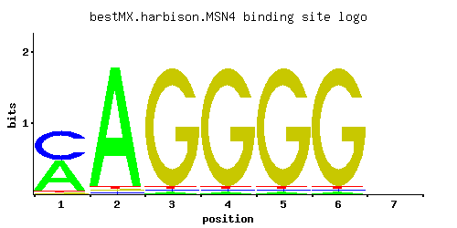

MSN4
YKL062W
Transcriptional activator related to Msn2p; activated in stress conditions, which results in translocation from the cytoplasm to the nucleus; binds DNA at stress response elements of responsive genes, inducing gene expression
Best-performing DNA-binding model.

View and copy the recommended matrices ↘
A | 0.488 0.965 0.012 0.012 0.012 0.012 0.250 C | 0.488 0.012 0.012 0.012 0.012 0.012 0.250 G | 0.012 0.012 0.964 0.964 0.964 0.964 0.250 T | 0.012 0.012 0.012 0.012 0.012 0.012 0.250
A | 48 96 1 1 1 1 25 C | 48 1 1 1 1 1 25 G | 1 1 96 96 96 96 25 T | 1 1 1 1 1 1 25
A | 0.42 1.10 -3.28 -3.28 -3.28 -3.28 -0.25 C | 1.00 -2.71 -2.71 -2.71 -2.71 -2.71 0.33 G | -2.71 -2.71 1.68 1.68 1.68 1.68 0.33 T | -3.28 -3.28 -3.28 -3.28 -3.28 -3.28 -0.25
Alternative candidate matrices 8
Historical matrix candidates from the original ScerTF database. Expand a source to inspect its original logo, scores, and matrix values.
MSN4Badis et. al.P = 0.01084View matrix ↘
MSN4_AFoat et. al.P = 6.82e-06View matrix ↘
MSN4_BFoat et. al.P = 1.14e-05View matrix ↘
MSN4_CFoat et. al.P = 0.2425View matrix ↘
MSN4_DFoat et. al.P = 0.00135View matrix ↘
MSN4_EFoat et. al.P = 1.03e-07View matrix ↘
MSN4Macisaac et. alP = 0.0004128View matrix ↘
MSN4Pachkov et alP = 0.001666View matrix ↘
Gene-level annotations and interactions.
Genes bound in ChIP-chip experiments 145 genes
YAL003W, YAL005C, YBL027W, YBL028C, YBL069W, YBL071C, YBL087C, YBL108W, YBR057C, YBR072W, YBR073W, YBR074W, YBR086C, YBR087W, YBR089W, YDR010C, YDR011W, YDR072C, YDR073W, YDR075W, YDR085C, YDR117C, YDR118W, YDR169C, YDR227W, YDR228C, YDR229W, YDR372C, YDR373W, YDR543C, YDR544C, YDR545W, YEL020W-A, YEL021W, YEL051W, YEL073C, YEL076W-C, YEL077C, YER007C-A, YER022W, YER103W, YER164W, YER166W, YER189W, YER190W, YFL063W, YFL064C, YFL065C, YFR001W, YFR031C-A, YGL108C, YGR027C, YGR032W, YGR142W, YGR210C, YGR211W, YGR251W, YGR254W, YGR296W, YHL048W, YHR033W, YHR034C, YHR035W, YHR079C, YHR087W, YHR091C, YIL050W, YIL051C, YIL120W, YIL122W, YIL128W, YIL129C, YIL173W, YIL174W, YIL175W, YIL176C, YIL177C, YJL188C, YJL225C, YJR123W, YKL004W, YKL005C, YKL006C-A, YKL006W, YKL061W, YLL026W, YLL063C, YLR194C, YLR199C, YLR200W, YLR254C, YLR255C, YLR256W, YLR256W-A, YLR390W-A, YLR439W, YLR462W, YLR463C, YLR464W, YLR465C, YLR466W, YLR467W, YML057W, YML063W, YML064C, YML111W, YML125C, YML131W, YML132W, YMR026C, YMR027W, YMR119W, YMR119W-A, YMR144W, YMR165C, YMR251W-A, YMR252C, YMR254C, YMR255W, YNL025C, YNL077W, YNL335W, YNL336W, YNL337W, YNL338W, YNL339C, YOR134W, YOR236W, YOR275C, YOR276W, YPL150W, YPL151C, YPL152W, YPL153C, YPL198W, YPL283C, YPR102C, YPR103W, YPR104C, YPR107C, YPR108W, YPR154W, YPR184W, YPR202W, YPR203W
Genes affected by TF deletion 41 genes
YPL240C, YJR114W, YLL030C, YOR289W, YBR093C, YDR281C, YCR050C, YIL156W, YML004C, YPR124W, YJR148W, YFL051C, YOR298W, YHR039C, YMR110C, YOR298C-A, YBR296C, YNR032W, YIL160C, YGR109W-B, YKL062W, YKR086W, YOR080W, YCR095C, YML098W, YER164W, YKR035W-A, YER017C, YML015C, YMR186W, YOR027W, YPL041C, YGL255W, YDR492W, YHR105W, YIR020W-B, YJL045W, YDR306C, YGL095C, YNL007C, YPR173C
Genes supported by both experiments 1 genes
YER164W
Predicted TF–TF partners 13 genes
ACA1, GSM1, MIG1, MIG3, PHD1, RPH1, RSC3, RSF2, SKN7, STP1, SUT1, UGA3, YER184C